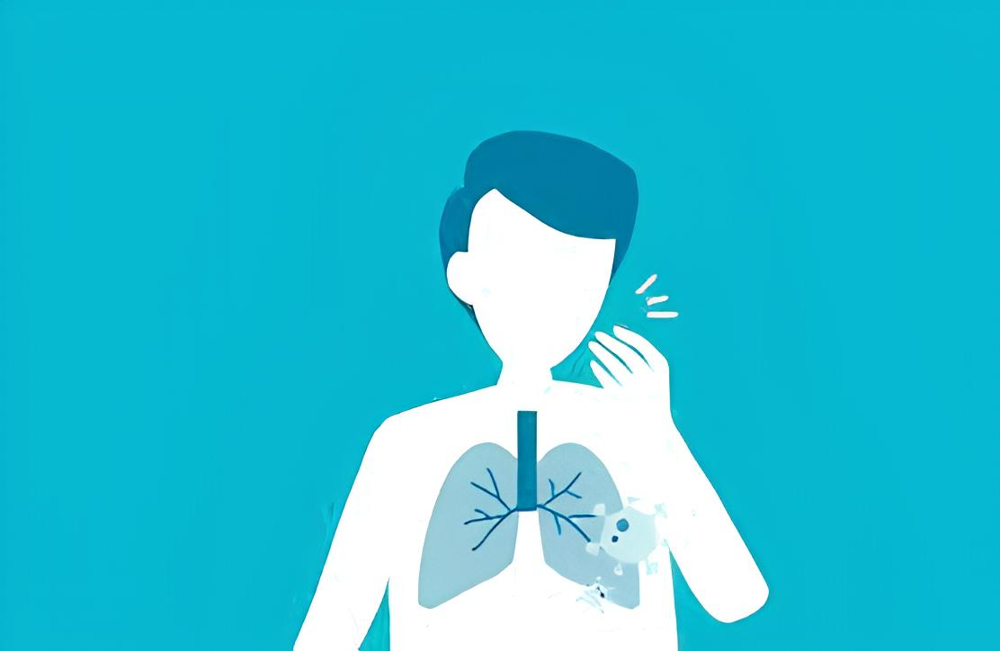
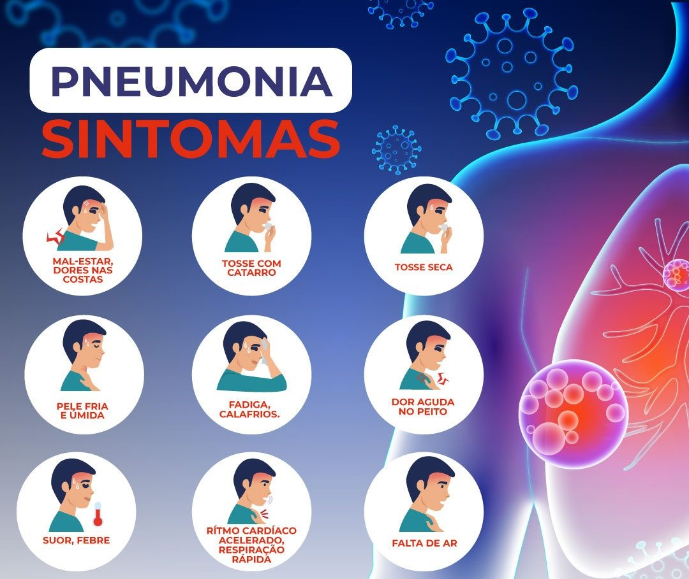
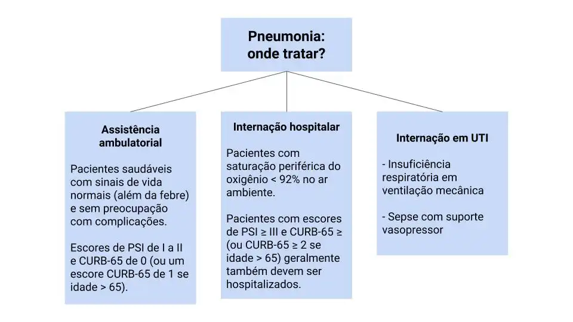
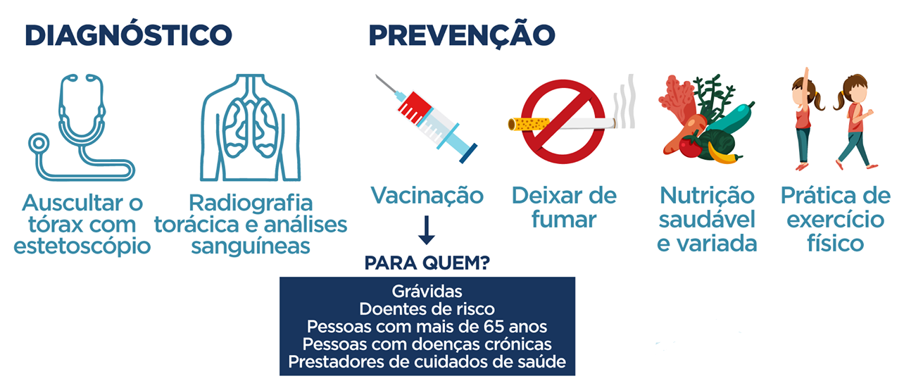

Carregando...
A pneumonia bacteriana é uma infecção grave dos pulmões causada por bactérias, que provoca inflamação nos alvéolos, pequenos sacos de ar nos pulmões. A bactéria Streptococcus pneumoniae é a principal causadora, mas outros microrganismos, como fungos e vírus, também podem causar a doença. Esse tipo de pneumonia pode ocorrer quando a imunidade está baixa ou como complicação de infecções virais como Covid-19 e influenza. Em 2023, houve um aumento de casos devido ao fim do isolamento da Covid-19, afetando vários países.


A pneumonia bacteriana é transmitida por meio de gotículas respiratórias expelidas por uma pessoa infectada. O contágio ocorre quando a pessoa infectada tosse, espirra ou fala, liberando as bactérias no ar. Outra forma de transmissão é pelo contato com superfícies contaminadas seguidas de toque no rosto, especialmente na boca e nariz. A infecção pode se espalhar para os pulmões quando as bactérias são aspiradas, superando as defesas naturais do organismo.
 O tratamento da pneumonia bacteriana geralmente envolve o uso de antibióticos prescritos pelo médico, que são eficazes no combate à infecção. Além dos antibióticos, é importante manter uma boa hidratação, descansar e, em alguns casos, utilizar medicamentos para controlar a febre e a dor. Em situações graves, pode ser necessário hospitalização para tratamento intravenoso e monitoramento mais intenso. É fundamental seguir as orientações médicas e completar o curso de antibióticos para garantir a eliminação total da infecção.
A gravidade da pneumonia bacteriana pode variar de leve a grave, dependendo do estado geral de saúde do paciente e da rapidez com que o tratamento é iniciado. Pacientes com condições pré-existentes, idosos e crianças pequenas são mais suscetíveis a complicações. Os sintomas graves incluem dificuldade respiratória, dor no peito intensa, febre alta e confusão. Se não tratada adequadamente, a pneumonia pode levar a complicações sérias, como infecção generalizada (septicemia) e, em casos extremos, pode ser fatal.

Além do tratamento com antibióticos, a prevenção é a melhor solução para evitar a pneumonia bacteriana. Medidas de prevenção incluem a vacinação contra pneumococo, uma boa higiene, como lavar as mãos regularmente e evitar o contato próximo com pessoas doentes. Manter um estilo de vida saudável, com uma dieta equilibrada e exercícios físicos, também contribui para fortalecer o sistema imunológico. Em casos de sintomas persistentes, é importante procurar orientação médica para um diagnóstico e tratamento adequados.
A prevenção da pneumonia bacteriana é crucial para reduzir o risco de infecção. As principais estratégias incluem a vacinação contra pneumococo, que protege contra diversas cepas bacterianas, e a prática de hábitos saudáveis, como uma dieta balanceada e exercícios regulares. Além disso, é fundamental adotar medidas de higiene, como lavar as mãos com frequência e evitar contato próximo com pessoas infectadas. Manter o ambiente limpo e bem ventilado também ajuda a reduzir a transmissão de bactérias.
João da Silva
16 de agosto de 2024, 14:32
Ótimas informações sobre a pneumonia bacteriana. Foi muito útil para entender a doença e os cuidados necessários.
Maria Oliveira
14 de agosto de 2024, 09:45
Achei a seção sobre prevenção muito esclarecedora. É importante reforçar essas medidas para manter a saúde.
Pedro Santos
13 de agosto de 2024, 16:21
As imagens ajudam a visualizar melhor o que é a pneumonia. Parabéns pelo conteúdo bem explicado!
Miguel Silva
11 de agosto de 2024, 19:34
Vocês fizeram um ótimo trabalho.
Lucas Vieira
10 de agosto de 2024, 12:53
Onde marco uma consulta?